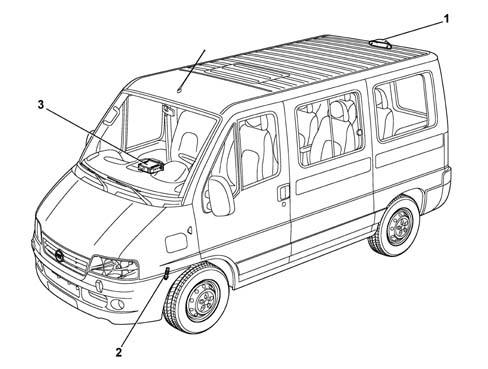
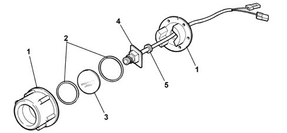
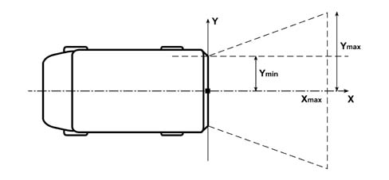

PARKING TV CAMERA
- Path
- Descriptions > 55 ELECTRICAL EQUIPMENT > PARKING TV CAMERA
- Kind
- system description
- Applies to
- all engines; all production periods
- Interactive page
- https://sloeber94.github.io/elrnDB-fDct/en/#/244000434
Applies to: all engines; all production periods
SPECIFICATIONS
The parking TV camera is located in the rear of the vehicle on the rear roof beam. This device ensures a rear view only during reverse activation.
The main aim of the TV rear view system is to aid the driver during parking manoeuvres. The system allows users who have engaged reverse to carry out manoeuvres while observing the view on the Connect display. The resulting view is a mirror-image (as provided by the rear view mirror).
The system consists of:
- TV camera with optical unit,
- protection against atmospheric and environmental agents,
- connection leads,
- multifunction display (built into Connect).
- microswitch on gearbox.

- 1 - TV camera
- 2 - Reversing sensor
- 3 - Connect
COMPOSITION
The TV camera consists of:
- outer protective shell (1),
- gaskets (2),
- protective glass (3)
- electronic circuit (4),
- electrical wiring (5).

OPERATION
A TV image is displayed with key ON (but not during start-up) and reverse engaged. TV operation is automatically disabled when reverse is disengaged.
The function is disabled:
- with key Off,
- if battery voltage drops below a minimum threshold,
- during engine start-up,
- when reverse is disengaged.
The TV camera is supplied iwith power only when in use.
The TV operating range is between -20°C and +80°C, but above +65°C image quality may be slightly reduced. This reduction will, however, disappear when the temperature is reduced.
The TV camera is supplied with power via the Connect system (500mA, 12 ± 2V), to which it supplies, in turn, a composite video signal via a coaxial cable.
If the vehicle is stove-painted, it is however advisable to remove the TV camera as a precaution.
The following figure shows the rear TV camera area of visibility.

- x max > = 3.5m
- y min > = 0.9m
- y max > = 3m
Refer to the relevant paragraph of the Connect description for further details of TV camera operation management.